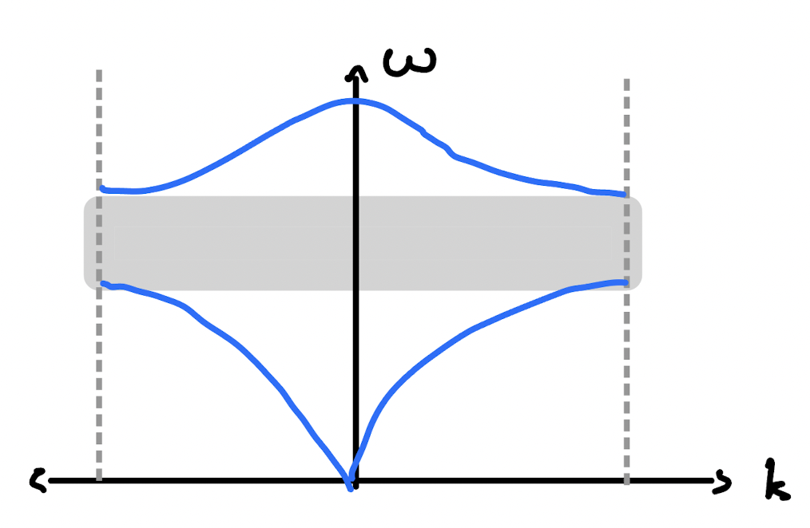

I believe that this is the first unit of 3.033? The class is really interesting so far, and it’s really surprising to see how nanoscale properties influence the macroscopic properties of things. It’s also quite surprising how much physics and differential equations are involved, but I can’t say I wasn’t expecting this. After all, everything in this class’ name screams quantum mechanics.
Hamiltonian Mechanics
In Newtonian mechanics, we learnt that the energy of an object can be written as $E = \frac{mv^2}{2} + V$ where $m$, $v$, and $V$ are the mass, velocity, and potential energy of the object.
Hamilton had the idea to rewrite the kinetic energy as $\frac{p^2}{2m}$ where $p$ is the momentum of the object. Hence, Hamiltonian mechanics was born. In fact, this rearrangement is so special that we don’t even use $E$ for energy anymore – we use $H$ instead (for “Hamiltonian”).
Wait, is there seriously a whole branch of mechanics named after a guy who rearranged one term of an equation? What’s so special about this form anyway? The usefulness of this form arises when we take the partial derivatives of $H$ with respect to $p$ and $x$:
$$
\begin{cases}
\frac{\partial H}{\partial p} = \frac{p}{m} = v = \frac{dx}{dt}\\
\frac{\partial H}{\partial x} = \frac{dV}{dx} = -F = -\frac{dp}{dt}
\end{cases}
$$
An unexpected symmetry arises – how cool is that? This symmetry is especially useful for solving spring-mass systems.
Of course, this isn’t the full picture – Hamiltonian mechanics is much more than just this – but it’s enough to get us started.
A Simple Example – Two Balls and a Spring
Consider a system of two identical balls of mass $m$ joined by a spring of length $L$ with spring constant $K$. How can we describe this system’s motion?
A model of a molecule
The Hamiltonian for this system is $H = \frac{p_1^2}{2m} + \frac{p_2^2}{2m} + \frac{K}{2}(x_2 - x_1 - L)^2$. Hamilton’s equations for ball 1 are consequently:
$$
\begin{cases}
\frac{\partial H}{\partial p_1} = \frac{p_1}{m} = \frac{dx_1}{dt}\\
\frac{\partial H}{\partial x_1} = -K(x_2 - x_1 - L) = -\frac{dp_1}{dt}
\end{cases}
$$
And similar equations can be found for ball 2. We can then take the second derivative of the first equation (with respect to time) and substitute the result into the second equation. From this, we get $\frac{d^2x_1}{dt^2} = \frac{1}{m} \cdot \frac{dp_1}{dt} = = \frac{K}{m}(x_2 - x_1 - L)$.
This is the equation for a simple harmonic oscillator! If we couple this with the equation we get for ball 2 and solve the system (either with a matrix or with elimination), we get the solution:
$$
\begin{cases}
u = x_1 + x_2\\
z = x_2 - x_1 - L\\
u(t) = u(0)\\
z(t) = Ae^{it \sqrt{2K/m}} + Be^{-it \sqrt{2K/m}}
\end{cases}
$$
Ok, so a simple harmonic oscillator oscillates. Big deal. Again, why should you care about Hamiltonian mechanics? The next part of this post will show you just that.
Phonons (Lattice Vibrations)
Imagine we have not two, but infinitely many masses connected by springs in a line. Now, how can we describe this system’s motion?
Monatomic Case
Let’s first consider the case where each spring and ball are identical. We’ll use $m$ for the mass, $K$ for the spring constant, $a$ for the space between balls (i.e., the lattice constant), and we’ll index our balls with the variable $s$. Instead of positions, we’ll consider displacements $u_s$.
A 1D monatomic crystal
The Hamiltonian for this system is $H = \sum_s \frac{p_s^2}{2m} + \sum_s \frac{K}{2}(u_s - u_{s - 1})^2$. For just ball $s$, it’s $H_s = \frac{p_s^2}{2m} + \frac{K}{2}(u_s - u_{s - 1})^2 + \frac{K}{2}(u_{s + 1} - u_s)^2$. Hamilton’s equations tell us $\frac{d^2u_s}{dt^2} = \frac{K}{m}(u_{s + 1} + u_{s - 1} - 2u_s)$. This describes a simple harmonic oscillator, so we conjecture that $u_s \propto e^{-i\omega t}$ for some unknown angular frequency $\omega$.
From this, we get $-\omega^2 u_s = \frac{K}{m}(u_{s + 1} + u_{s - 1} - 2u_s)$. We still have a dependence on $u_{s + 1}$ and $u_{s - 1}$, but luckily we have another trick up our sleeves to solve this.
Consider $u_{s + 1} + u_{s - 1} - 2u_s$. If you’re familiar with how computers do calculus, you might recognize that this looks similar to the discrete second derivative of $u$ at $s$. Knowing this, we once again have an equation describing a simple harmonic oscillator.
This time, we conjecture that the solution has the form $u_0 e^{iksa}$ for some amplitude $u_0$, where $k$ is an angular wavenumber. This is because each normal mode must be periodic in space in addition to time, from our discrete second derivative trick above. The full solution is thus $u_s(s, t) = u_0e^{iksa - i\omega t}$
To relate $\omega$ and $k$, we substitute this back into our equation to get $\omega(k) = \sqrt{\frac{4K}{m}} \left| \sin\left(\frac{ka}{2}\right)\right|$. This relation is known as a dispersion relation and is periodic with period $\frac{2\pi}{a}$. We only care about the first period, which we call the Brillouin zone.
Dispersion relation
Physical Implications
- Disturbances in this crystal correspond to oscillating densities in it – i.e., sound waves.
- The maximum frequency of sound that this crystal can transmit is $\omega_{\max} = \sqrt{\frac{4K}{m}}$.
- The phase velocity of sound through this crystal is $v_p = \frac{\omega}{k}$ and the group velocity is $v_g = \frac{d\omega}{dk} = \sqrt{\frac{Ka^2}{m}} \cos\left(\frac{ka}{2}\right)$. (The group velocity is what we commonly think of as the speed of sound).
- When $k$ is very small, $\omega \approx \sqrt{\frac{K}{m}} ka$ and $v_g \approx \sqrt{\frac{K}{m}} a$ – the speed of sound is independent of frequency!
Relation to Elastic Modulus
Did you know that a material’s elastic modulus (i.e., how squishy/stretchy it is) can be expressed in terms of its density and the speed of sound through it? This amazing fact can be shown with what we just derived.
Consider a crystal where a force $F$ is acting on an area $A$ with $N$ bonds. The force compresses the crystal by $u$.
The potential energy in each unit cell is $V(u) = \frac{K}{2}u^2$, so the magnitude of $F$ is $NKu$. Stress is defined as $\sigma = \frac{F}{A} = \frac{Ku}{a^2}$ since $A = Na^2$.
We also know $\sigma = E\varepsilon$ where $\varepsilon$ is the strain of the material. Since strain is the compression per bond length here (i.e., $\frac{u}{a}$), we get $E = \frac{K}{a}$.
This means that $v_g = \sqrt{\frac{Ka^3}{m}} = \sqrt{\frac{E}{\rho}}$. Therefore, we get the relation $E = \rho v_g^2$.
In real experiments, elastic modulus is measured by attaching a piezoelectric crystal to one end of the material and then measuring the time it takes for a sound excitation to reach the other end.
Diatomic Case
(Oops I kind of skimmed over this section’s maths, so it might be a bit incomplete). Imagine now we have two types of balls and springs, arranged in alternating order:
A 1D diatomic crystal
For simplicity, let’s assume $M = m$ and $K > G$.
Just as before, we get solutions that are periodic in both space and time. However, something cool happens in this case. Solving Hamilton’s equations gives us two possible $\omega$ for a single $k$! More specifically, $\omega(k)^2 = \frac{K + G}{m} \pm \frac{1}{m} \sqrt{K^2 + G^2 + 2KG \cos(ka)}$. This means that there are two curves (branches) in our dispersion relations.
Phononic Band Gap
The high-frequency branch is known as the optical branch. This is because the high frequencies can sometimes interact with visible light. The lower-frequency branch is known as the acoustic branch.
The dispersion relations with a band gap
At $k \approx 0$ on the optical branch, the two different types of balls move in opposite directions:
Optical branch movement
At $k \approx 0$ on the acoustic branch, they move in the same direction, so the entire crystal appears to move as a whole as a result:
Acoustic branch movement
There’s a gap between the two branches – between $\omega = \sqrt{\frac{4G}{m}}$ and $\omega = \sqrt{\frac{4K}{m}}$. This gap is known as the phononic band gap, and it represents the range of wavelengths that can’t propagate through this material – it’s effectively soundproof to those frequencies!
In general, periodicity leads to band gaps. This also applies to optical properties of materials, which we’ll see later.
References
- MIT Opencourseware. 2013. Electronic, Optical and Magnetic Properties of Materials. [ONLINE] Available at: https://ocw.mit.edu/courses/3-024-electronic-optical-and-magnetic-properties-of-materials-spring-2013/. [Accessed 9 June 2022].
- YouTube. 2013. Phonons. [ONLINE] Available at: https://youtu.be/M4WQs_U1nmU. [Accessed 10 June 2022].